Adición de Nuevos Comprobantes: “SI”
Permite ingresar nuevos Comprobantes; empezando por el encabezado del Comprobante, mediante la pantalla que muestra 1.8.
Encabezado del Comprobante
Para el registro del encabezado ingrese la información que solicita 1.8.
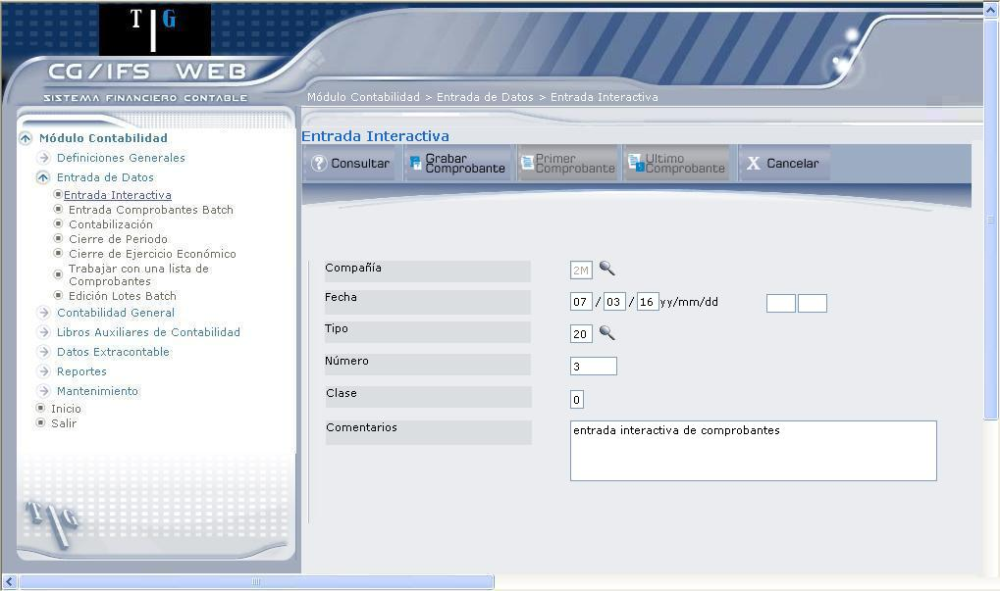
Figura 1. Entrada Interactiva – Adición de nuevos comprobantes.
Compañía:
Despliega el código de la compañía que seleccionó en la primera pantalla.
Fecha:
Digite la fecha en la que registra el Comprobante. Al aportar la fecha, se calcula automáticamente el Año-Periodo correspondiente, en los casilleros que se encuentran a la derecha.
Tipo:
Seleccione el tipo de Comprobante, dando clic en el ícono (), el mismo que despliega una lista de comprobantes.
Número:
Calcula un número secuencial y lo pinta en pantalla. El usuario puede cambiar este número de Comprobante si lo desea.
Clase:
Clase de Comprobante. Este campo depende de la moneda que use la compañía, en nuestro caso siempre será cero, moneda local.
Comentarios:
Digite los comentarios respectivos y presione el tecla ENTER o el botón Grabar Comprobante.
BOTONES
Los siguientes botones permiten realizar las siguientes acciones:
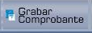
Autorizaciones:
Para poder acceder a la siguiente pantalla, el usuario conectado debe tener asignadas las siguientes autorizaciones:
- Si se selecciona el valor ‘N’ en Sesión de Aprobación requiere que el usuario esté como mínimo autorizado a Consultar Movimientos para la compañía seleccionada.
- Si se selecciona el valor ‘S’ en Sesión de Aprobación requiere que el usuario esté como mínimo autorizado a Aprobar Comprobantes para seleccionada.
Registro de movimientos del comprobante
Después de haber registrado el encabezado del comprobante se procede al registro de los movimientos, mediante la pantalla que muestra 1.9.
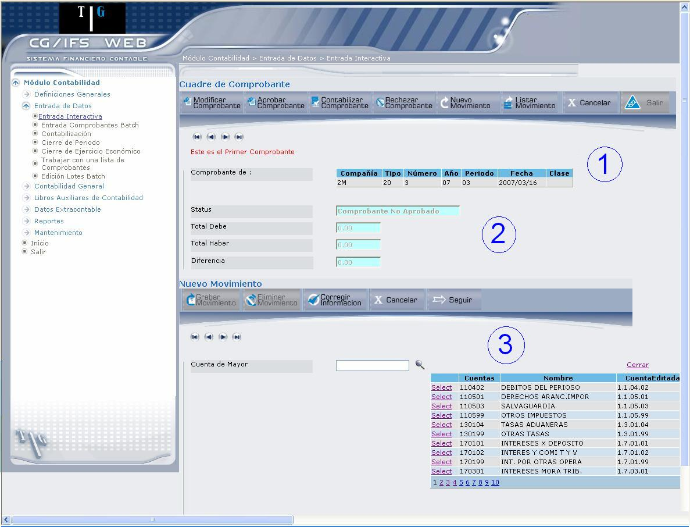
Figura 1. Entrada Interactiva – Ingreso de Movimientos.
La pantalla se ha dividido en tres secciones, para una mejor explicación:
SECCION 1:
Despliega información referente al encabezado del comprobante, como: código de compañía, código del tipo de comprobante, número de comprobante, año contable, periodo contable, fecha en la que se ingresó el comprobante, y clase de comprobante. También presenta en la parte superior los botones de navegación ( ) que permiten ir de un comprobante a otro.
) que permiten ir de un comprobante a otro.
SECCION 2:
Esta información se despliega tomando en cuenta el estado del comprobante y los valores de los movimientos que ingrese en la parte inferior.
Status:
Despliega el estado que tiene el comprobante que se visualiza; dichos estados pueden ser los siguientes: No aprobado, Aprobado, Contabilizado, Rechazado.
Total Debe/ Total Haber:
Permite verificar que el comprobante cuadre, para esto en la pantalla de Asignación Inicial debe escoger Ingreso para cuentas del Haber y Gastos para cuentas del Debe.
Diferencia:
Despliega la diferencia que existe entre ambas cuentas, para que el comprobante cuadre debe desplegar el valor cero.
SECCIÓN 3:
En esta sección se ingresan los movimientos del comprobante. Para presentar esta sección debe presionar el botón Nuevo Movimiento. La información que debe ingresar se explica a continuación:
Cuenta de Mayor:
Ingrese la cuenta de mayor correspondiente al movimiento. Si conoce el código, digítelo y presione la tecla ENTER; caso contrario, dé clic en el ícono ( ), mismo que despliega una lista de cuentas. Seleccione la cuenta dando clic en el vínculo Select, se despliegan los campos que muestra 1.10.
), mismo que despliega una lista de cuentas. Seleccione la cuenta dando clic en el vínculo Select, se despliegan los campos que muestra 1.10.
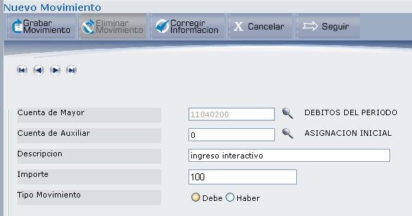
Figura 1. Entrada Interactiva – Adición de nuevos comprobantes - Nuevo Movimiento.
Cuenta de Auxiliar:
(Sólo aparece si de Mayor utiliza Tipo de Auxiliar) seleccione la cuenta de auxiliar que se verá afectada por el movimiento, presionando el ícono (), el mismo que despliega la lista de cuentas auxiliares, pertenecientes a la cuenta de mayor seleccionada.
Segundo y Tercer Auxiliar
Anotar una Cuenta de Auxiliar válida para el tipo de Auxiliar asignado a de Mayor, como Segundo o Tercer Auxiliar, con las siguientes consideraciones:
- Anotar “?” para visualizar una lista de Cuentas de Auxiliar ordenadas por Nombre.
- Anotar “??” para visualizar una lista de Cuentas de Auxiliar ordenadas por Código.
- Autorizaciones: para poder entrar movimientos, el usuario conectado, debe tener autorización a entrar movimientos para el Tipo de Auxiliar o para el Grupo de Cuentas de Auxiliar al que pertenecen las Cuentas de Auxiliar seleccionadas.
Descripción: (opcional)
Digite la descripción del movimiento.
Importe:
Digite el valor que se asigna a la cuenta. Si el aporte es negativo debe anteponer el signo menos (-) al importe.
Tipo Movimiento:
Permite definir si el tipo de movimiento se registra en las cuentas del DEBE o el HABER, por defecto el valor positivo denota Débito y el valor negativo Crédito. Al seleccionar, se despliegan adicionalmente los siguientes campos:
Los campos: Número de Documento, Fecha de Documento y Reservado Usuario se pueden ver en 1.11.
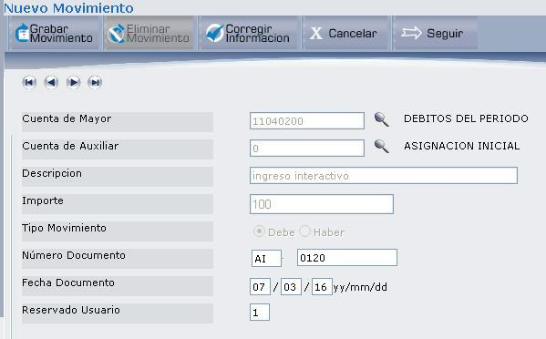
Figura 1. Entrada Interactiva – Adición de nuevos comprobantes - Ingreso de asientos.
Número Documento:
Solo aparece si la cuenta de mayor requiere número de documento. Aquí puede observarse dos campos, en el primero se ingresa cualquier tipo de documento que haga referencia al documento que está registrando y en el segundo se digita el número de documento.
Fecha Documento:
Solo aparece si de Mayor lo requiere. Despliega la fecha del documento, esta fecha puede ser modificada.
Fecha Vencimiento:
(Solo aparece si de Mayor la requiere)
Cuando de Mayor es de carteras, calcula el primer vencimiento según la fórmula de pago del memo. Si no existen datos en el memo, anotar la fecha de vencimiento de acuerdo con el valor DEBE/HABER según esté definida de Mayor.
Número de documento 2 (opcional)
Es obligatorio si la cuenta lo requiere. Se debe anotar el número que identificará a este asiento en particular.
Reservado Usuario: (opcional)
Se puede utilizar este campo para una clasificación adicional.
Si de Auxiliar anotada en el movimiento tiene definido memo y está asociada a un Tipo de Auxiliar con formato de memo ‘deudor/acreedor’, el programa muestra el valor correspondiente al campo Reservado Usuario del memo. En el caso que no aparezca ningún valor debe anotarse un ‘Reservado Usuario’.
Al ingresar los datos que se pide en la sección 3, presione el botón, o presione la tecla ENTER, que despliega el mensaje “Registro Grabado”.
BOTONES (SECCIÓN MOVIMIENTOS)
- Presione el botón Listar Movimiento, de la parte superior, el mismo que lista los movimientos registrados.
- Una vez listado dé clic en el vínculo Select del movimiento que desea eliminar.
- Al presentarse el movimiento, aparecen los botones activos; dé clic sobre el botón Eliminar Movimiento, que presenta el mensaje: “Está usted seguro de eliminar la información del MOVIMIENTO?.” presione el botón Aceptar y se eliminará de la lista de movimientos.
Seleccione el movimiento que desea corregir dando clic en el vínculo Select, el mismo que despliega la información del movimiento. Una vez ubicado en el movimiento, dé clic sobre este botón (Corregir Información), que despliega de Mayor, como se muestra a continuación:
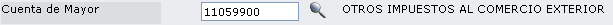
Si desea modificar la partida, borre el código y presione el ícono para escoger una nueva partida. Si no desea modificar presione el botón Seguir, o ubíquese en el código y presione la tecla ENTER y actualice la información que se requiera. Por último debe presionar el botón Grabar Movimiento.
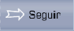
BOTONES SUPERIORES
En la parte superior de la pantalla presenta los botones que permiten el mantenimiento de los comprobantes, estos botones permiten realizar las siguientes acciones:
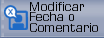
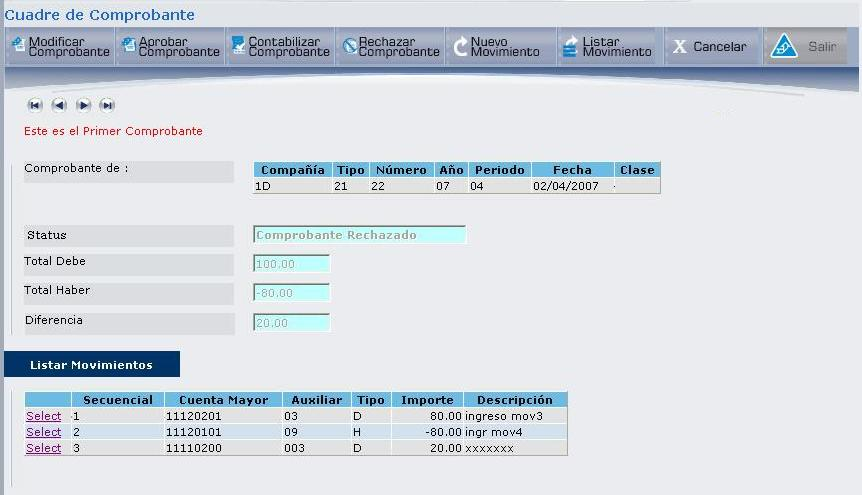
Figura 1. Entrada Interactiva – Adición de nuevos comprobantes – Listar Movimientos.
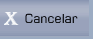
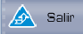
Cuadre de comprobante
El cuadre de comprobante permite verificar que el comprobante está cuadrado, la diferencia entre el Debe y el Haber debe ser cero.
Según vaya ingresando los movimientos, el valor del importe se agrega a las cuentas del Debe o al Haber (tomando en cuenta el signo que se dé a cada valor), como se muestra en 1.13, sección 2.
La sección 3, presenta el listado de movimientos ingresados después de haber presionado el botón Listar Movimientos.
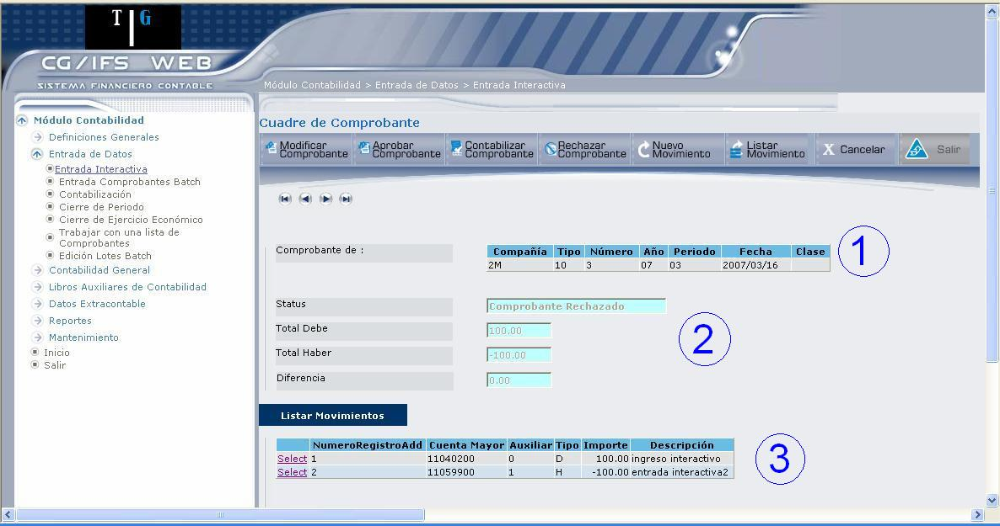
Figura 1. Entrada Interactiva – Adición de nuevos comprobantes - Cuadre de Comprobante.
Para cuadrar el comprobante, se debe digitar valores con signo negativo. Una vez cuadrado, el usuario podrá aprobar, modificar o rechazar los comprobantes, tomando en cuenta las siguientes autorizaciones:
- Si el usuario conectado está autorizado únicamente a ingresar movimientos, sólo puede rechazar Comprobantes no aprobados para modificarlos posteriormente si se desea.
- Si el usuario conectado está autorizado tanto a ingresar movimientos como a aprobar Comprobantes, puede rechazar Comprobantes tanto aprobados como no aprobados y modificarlos posteriormente si lo desea.
- Si el usuario conectado está autorizado únicamente a aprobar Comprobantes, puede rechazar Comprobantes tanto aprobados como no aprobados pero no puede modificarlos.
Created with the Personal Edition of HelpNDoc: Free iPhone documentation generator